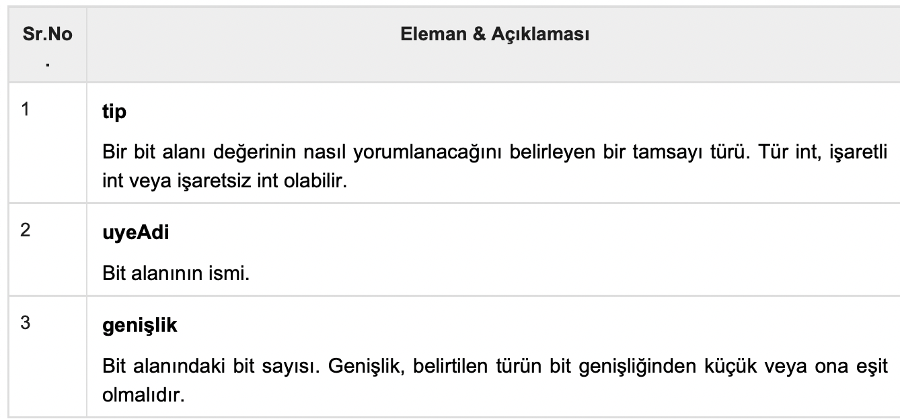

C Öğreticisi 17 (Bit Alanları)
Bu yazılar https://www.tutorialspoint.com/cprogramming/ adresindeki yazı dizilerinin çevirileridir.
C programınızın status olarak adlandırılan bir yapıda gruplandırılmış bir dizi TRUE / FALSE(doğru/yanlış) değişkeni içerdiğini varsayalım.
struct {
unsigned int widthValidated;
unsigned int heightValidated;
} status;
Bu yapı 8 bayt bellek alanı gerektirir, ancak gerçekte değişkenlerin her birinde 0 veya 1 değerini tutarız. C dili, bu gibi durumlarda bellek alanını kullanmak için çok daha iyi bir yol sunar.
Bir struct içerisinde bu değişkenleri kullanıyorsanız, C derleyicisine yalnızca bu bayt sayısını kullanacağınızı söyleyen bir değişkenin genişliğini tanımlayabilirsiniz. Örneğin, yukarıdaki yapı aşağıdaki gibi yeniden yazılabilir -
struct {
unsigned int widthValidated : 1;
unsigned int heightValidated : 1;
} status;
Yukarıdaki yapı, status değişkeni için 4 bayt bellek alanı gerektirir, ancak değerleri saklamak için yalnızca 2 bit kullanılır. Her biri 1 bit genişliğinde en fazla 32 değişken kullanırsanız, status yapısı 4 bayt kullanır. Bununla birlikte, 33 değişkeniniz olur olmaz, belleğin bir sonraki yuvasını tahsis eder ve 8 bayt kullanmaya başlar. Kavramı anlamak için aşağıdaki örneği inceleyelim -
#include
#include
/* basit bir yapı tanımlaması */
struct {
unsigned int widthValidated;
unsigned int heightValidated;
} status1;
/* bit alanlarıyla bir yapı tanımlaması */
struct {
unsigned int widthValidated : 1;
unsigned int heightValidated : 1;
} status2;
int main( ) {
printf( “status1 tarafından kullanılan bellek alanı : %d\n”, sizeof(status1));
printf( “status2 tarafından kullanılan bellek alanı : %d\n”, sizeof(status2));
return 0;
}
Yukarıdaki kod derlenip çalıştırıldığında -
status1 tarafından kullanılan bellek alanı : 8
status2 tarafından kullanılan bellek alanı : 4
Bit Alanı Bildirimi
Bir bit alanının bildirimi bir yapı içinde aşağıdaki forma sahiptir -
struct {
tip [uyeAdi] : genişlik ;
};

Önceden tanımlanmış bir genişlikle tanımlanan değişkenlere bit alanları denir. Bir bit alanı tek bir bitten daha fazlasını tutabilir; örneğin, 0 ile 7 arasında bir değer depolamak için bir değişkene ihtiyacınız varsa, aşağıdaki gibi 3 bit genişliğinde bir bit alanı tanımlayabilirsiniz -
struct {
unsigned int yas : 3;
} Yas;
Yukarıdaki struct tanımı C derleyicisine yaş değişkeninin değerini saklamak için sadece 3 bit kullanacağını bildirir. 3 bitten fazla kullanmaya çalışırsanız, bunu yapmanıza izin vermez. Aşağıdaki örneği deneyelim -
#include
#include
struct {
unsigned int yas: 3;
} Yas;
int main( ) {
Yas.yas = 4;
printf( “Sizeof( Yas ) : %d\n”, sizeof(Yas) );
printf( “Yas.yas : %d\n”, Yas.yas );
Yas.yas = 7;
printf( “Yas.yas : %d\n”, Yas.yas );
Yas.yas = 8;
printf( “Yas.yas : %d\n”, Yas.yas );
return 0;
}
Yukarıdaki kod derlendiğinde bir uyarı ile derlenir ve yürütüldüğünde aşağıdaki sonucu verir -
Sizeof( Yas ) : 4
Yas.yas : 4
Yas.yas : 7
Yas.yas : 0
https://www.tutorialspoint.com/cprogramming/c_bit_fields.htm